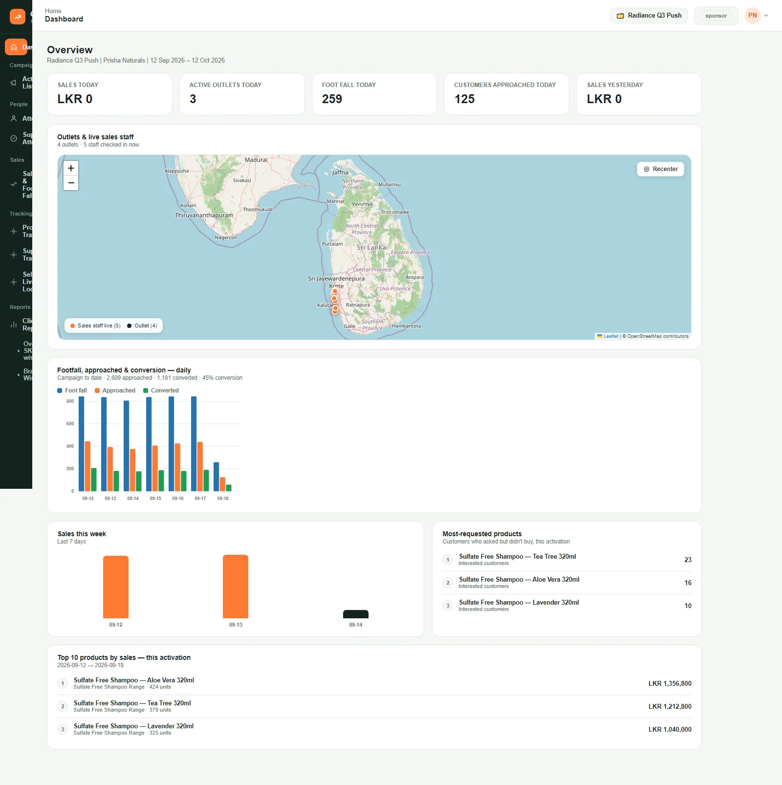
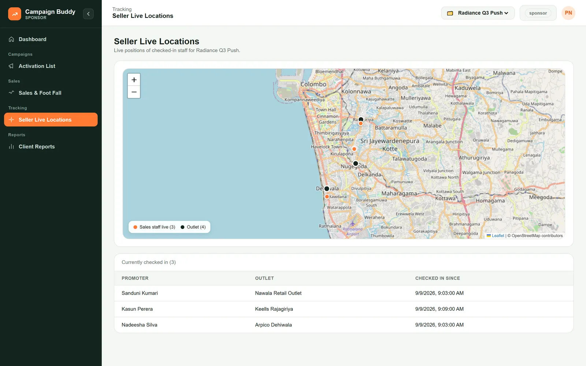
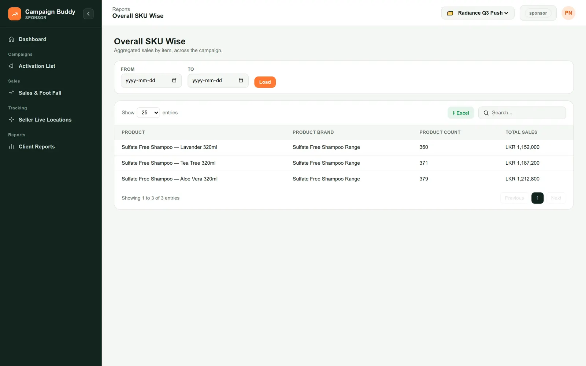
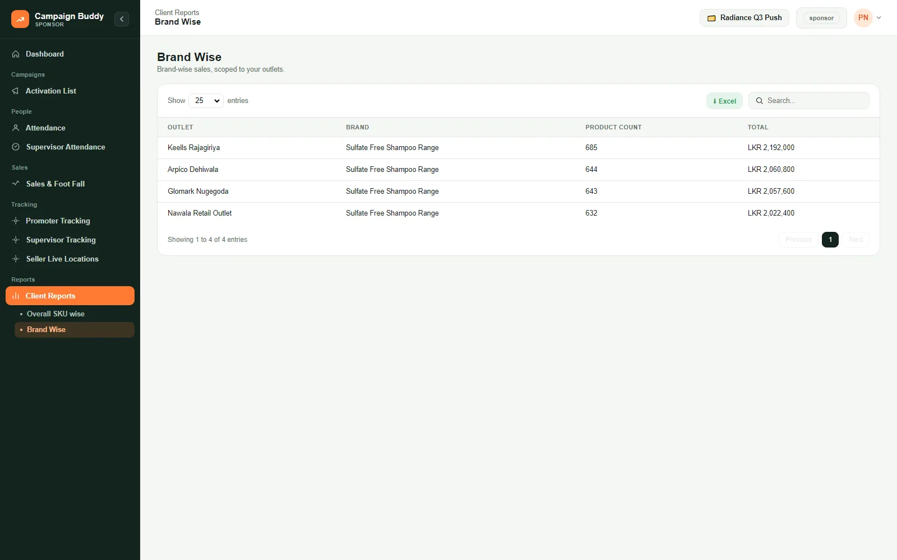
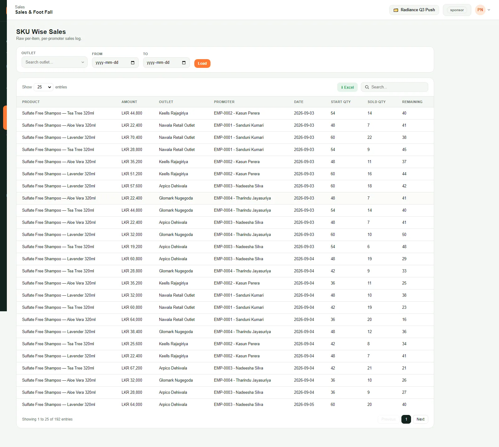
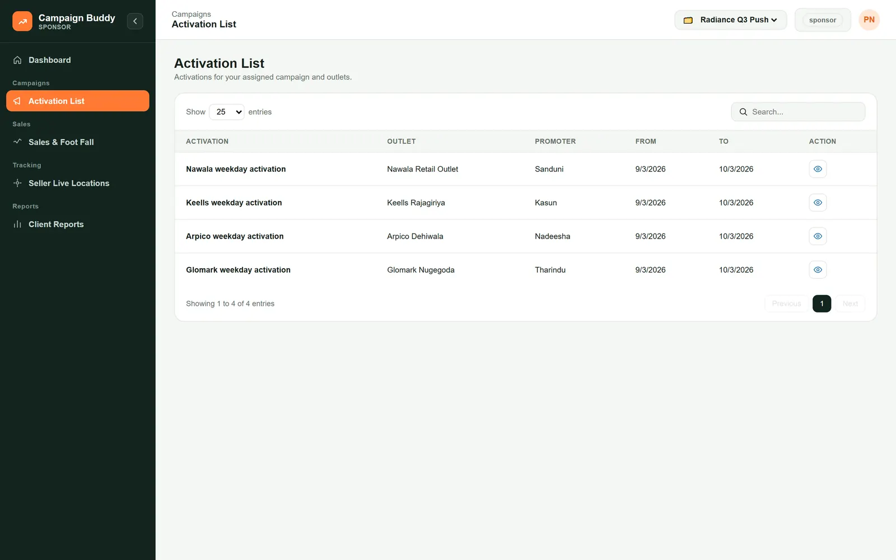

Sponsor guide
Your login is read-only and scoped automatically to your campaign. You cannot change anything, and you never see another brand's data, so there is nothing to set up and nothing to break. Use it to check today's numbers, watch promoters on shift, and pull your own reports without emailing the agency.
01Sign in and choose your campaign
Every time you open the portal
Sign in and choose your campaign
-
Open the portal address in a browser, enter your username and password, and sign in. You land on your Dashboard.
-
If you sponsor more than one campaign, use the campaign switcher in the top-right (the folder icon) to pick the one you want. Every screen then shows that campaign only.
Tip: the header always shows which campaign you are looking at. Check it before you read the numbers.
02Read the dashboard
Your at-a-glance view of today
Read the dashboard
-
The tiles at the top are today so far: total sales, footfall, how many outlets have a promoter checked in right now, and how many outlets are active today. They update as promoters work.
-
The Seller live locations map shows every promoter currently checked in, with their outlet. It refreshes on its own every few seconds.
-
Top products lists your best sellers for the campaign so far, with units and value. For anything more detailed, use the reports (task 4).
03Watch the live promoter map
To see who is on shift right now
Watch the live promoter map
-
Open Seller Live Locations from the left menu for the full-screen version, with a list of everyone checked in and when.

-
A promoter only appears while their app is open and they are checked in. An empty map after hours is normal.
04Pull a sales report
By product or by brand, any dates, exportable
Pull a sales report
-
From the left menu, open Client Reports and choose Overall SKU Wise (per product) or Overall Brand Wise (per brand).
-
Set a From and To date and press Load. Leave the dates blank for the whole campaign.

-
Each row shows units sold and total value; the grand total is at the bottom. The brand-wise report rolls the same numbers up per brand.

-
Press the green Excel button to download the table.
05Dig into the sales log
Row-by-row, per outlet and day
Dig into the sales log
-
Open Sales & Foot Fall. This is the raw log, one row per product, per outlet, per day, with start quantity, sold and remaining.

-
Filter by Outlet and a date range and press Load, or type in Search. Export with Excel.
06See what is running where
The outlets, promoters and dates in your campaign
See what is running where
-
Open Activation List for a read-only view of every posting in your campaign: which promoter is at which outlet, the dates, and whether it is active or upcoming.
